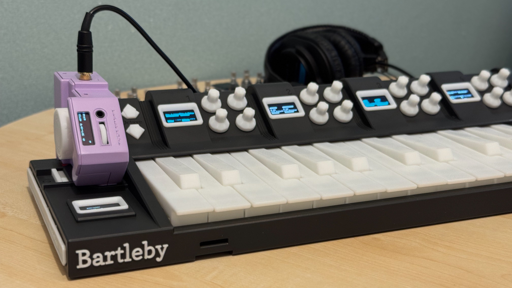
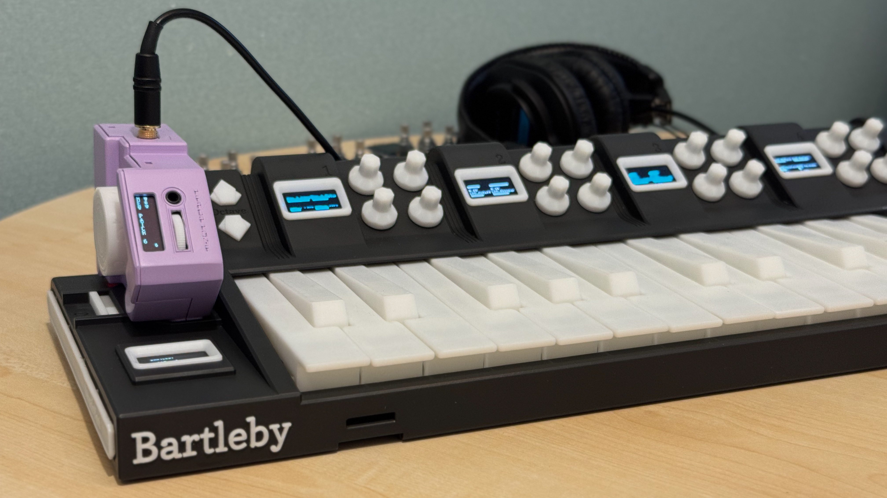
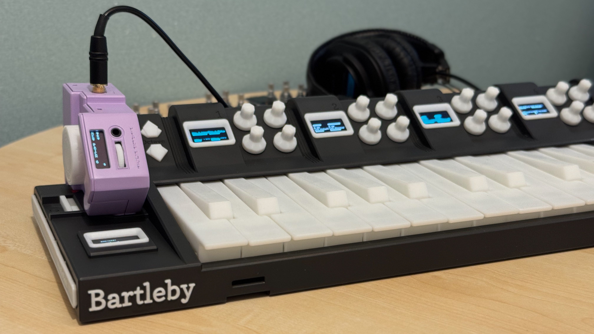
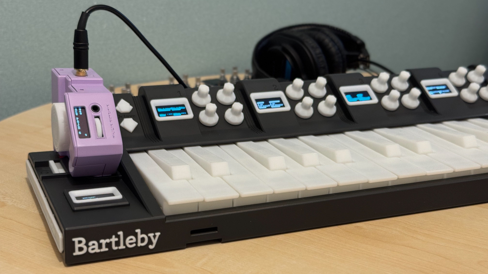

MPEシンセサイザー、BartlebyとCandide。阿吽の呼吸で、美しい音楽を
Every combination is a new instrument.
キーボードがBartleby。サウンドがCandide。合わせればひとつの楽器になります。分離すれば、それぞれが次の製品とつながります。新しいカートリッジは新しい音を、新しいベースステーションは新しい演奏方法をもたらします。
The keyboard is Bartleby. The sound is Candide. Together, they're one instrument. Pull them apart, and each piece connects to whatever we build next. New cartridges bring new sounds. New base stations bring new ways to play.

Feel the difference between notes.
カートリッジを差し込めば、すべてが即座につながります。キーからボイスへ、ノブからパラメーターへ、圧力から表現力へ。マッピング作業もマニュアルも不要です。Attach Partのカートリッジなら、機材のことは忘れて、ただ演奏に集中できます。
鍵盤を深く押し込む。スライドしてピッチを曲げる。ダイヤルを回して音を作り込む。手の動きすべてが、そのまま音楽の一部になります。
Snap in a cartridge and everything's already talking—keys to voices, knobs to parameters, pressure to expression. No mapping session. No manual. With Attach Part cartridges, it just disappears and you play.
Press into a note. Slide to bend the pitch. Turn a dial to shape the sound. Everything your hands do becomes part of the music.
Snap in. Sound out.
Candideはあなたとサウンドの間に立ちません。パッチを選んですぐに演奏できます。演奏しながら音を変えることも、ゼロから作ることも可能です。深く追求したいときに、その奥行きがあります。
弱く弾く。強く弾く。コードに体重を預ける。すべてのボイスが応えます。Candideは本格的な深みを持つポリフォニック・サブトラクティブ・シンセサイザーです。ベースステーションから音を調整することも、AP Consoleで独自のサウンドを設計することもできます。
Candide never gets between you and the sound. Pick a patch and play. Shape it as you go, or start from zero. The depth is there when you want it.
Play soft, play hard, lean into a chord. Every voice responds. Candide is a polyphonic subtractive synthesizer with real depth under the hood. Tweak sounds from the base station, or design your own in AP Console.

Sound design happens here.
ブラウザベースの設定ツール。USBで接続して、Bartlebyのノブ割り当てやOLEDラベルの編集、Candideのパッチ作成が可能です

AP ConsoleはAttach Partのデバイスマネージャーです。USB接続してapc.attachpart.comを開くだけ。ダウンロードもインストールも不要です。
ノードベースのエディターでCandideのパッチを構築できます。モジュールをドラッグし、オシレーター、フィルター、モジュレーションソース間をワイヤーで接続します。レンジの設定やモジュレーション量の調整も可能で、結果はすぐに聴けます。
Bartlebyの操作感を自分の手に合わせて調整できます。インタラクティブなカーブエディターで、ベロシティ、プレッシャー、ピッチベンドのレスポンスを細かく設定可能です。任意のダイヤルを任意のパラメーターに割り当て、OLEDにラベルを表示できます。
AP Console is the Attach Part device manager. Plug in over USB, open apc.attachpart.com, and you're in. No download. No install.
Build patches on Candide with a node-based editor. Drag modules, draw wires between oscillators, filters, and modulation sources. Set ranges, assign modulation depths, and hear the result immediately.
Shape how Bartleby responds to your hands. Interactive curve editors let you tune velocity, pressure, and pitch bend response to match how you play. Assign any dial to any parameter and label it on the OLED.